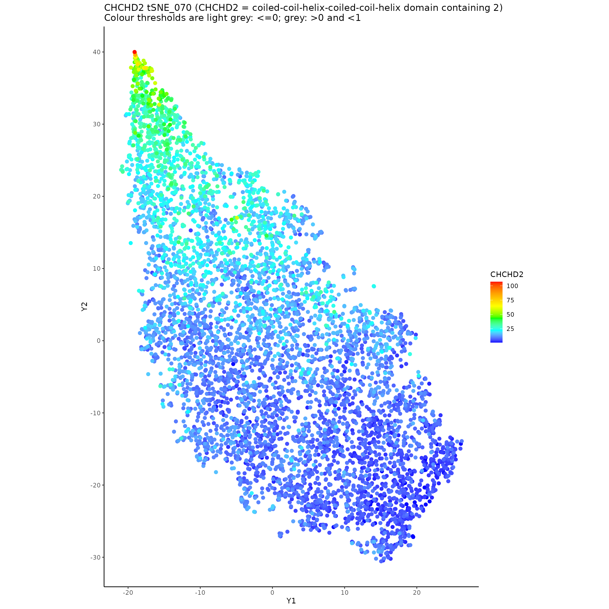

CSCPlots Tutorial 1
tutorial_1.RmdTutorial 1: Identifying and Characterising Cancer Stem Cells In SCLC CDX Single-Cell RNA-Seq
CSCPlots is a collection of functions that can be combined to create a pipeline, to achieve the objective of finding and characterising putative cancer stem cells.
Results from applying this method to scRNA-Seq from several cancer types, will be published in the literature later this year. The tutorials shown here replicate some of these results, while trying to familiarise the reader with this pipeline, so that you may generate similar results with your own scRNA-Seq data.
During the construction and use of the pipeline, we will use t-SNE plots to identify high transcription cells with predicted high stemmess compared to the other cells from their cell population. This will require prediction of stemness in each cancer cell, using several similar machine learning methods - different implementations of random forests. We’ll use this information to identify a subset of cells as putative stem cells, and then analyse them for preferential expression, relative to the other cells in the cell population they are selected from. This will aim to identifty genes that are driving these cells, which are in turn driving the tumour they are part of. In addition, understanding which genes are elevated and suppressed in cancer stem cells (CSCs), can reveal how the tumour is resisting drug treatments, and achieving immune evasion, by giving CSCs exceptionally hardy molecular characteristics.
Tutorial 1 shows how to apply this methodology to SCLC CDX scRNA-Seq expression matrices published by Byers et al. (Nature Cancer 2020). This example uses only raw read counts, and we’ll focus on just two of the samples from this dataset, for brevity. A CDX is a tumour produced from patient circulating tumour cells (CTCs).
Tutorial 2 will use a similar pipeline, this time applied to melanoma data published by Tirosh et al. (Science 2016). This is a more complex dataset in that the 4558 cells in this population are of different types, i.e. malginant cancer cells, immune cells, fibroblasts, etc., and is sourced from 19 patients. We’ll focus on CSCs from eight of these patients’ tumours.
OK, let’s get started!
Step 1: Download SCLC CDX scRNA-Seq Expression Matrices
Firstly, prepare the CDX expression data included data with this package.
The two samples they’re from, are taken from tumours created from CTCs, from the same SCLC patient.
GSM4104152_SC4.LB17009 is from a CDX created before the patient was treated with Talazoparib; GSM4104161_SC4_Talazoparib.LB17011 is from another CDX generated after this patient received clinical treatment with Talazoparib. (Talazoparib is a PARP inhibitor that interferes with DNA repair in the cancer cells.)
library("Matrix")
library("gtools")
library("Rtsne")
library("caret")
library("ranger")
library("e1071")
library("randomForest")
library("ggplot2")
library("ggrepel"); options(ggrepel.max.overlaps = Inf)
library("cscplots")
project_name <- "SCLC_CDXs_project"
wd <- './' # set the working directory
saveDir <- paste0(wd, 'save/')
resultsBaseDir <- paste0('results/')
resultsDir <- paste0('results/', project_name, '/')
dataDir <- paste0(wd, '../data/')
dir.create(saveDir, showWarnings = FALSE)
dir.create(resultsBaseDir, showWarnings = FALSE)
dir.create(resultsDir, showWarnings = FALSE)
dir.create(dataDir, showWarnings = FALSE)
CDX_sample_IDs <- c(
'GSM4104161_SC4_Talazoparib.LB17011',
'GSM4104152_SC4.LB17009'
)
number_of_samples <- length(CDX_sample_IDs)
resultsDirs <- list()
tSNEsDirs <- list()
pCSCsDirs <- list()
prefExprDirs <- list()
for(i in 1:length(CDX_sample_IDs)){
resultsDirs[i] <- paste0(resultsDir, CDX_sample_IDs[i], '/')
tSNEsDirs[i] <- paste0(resultsDir, CDX_sample_IDs[i], '/tSNEs/')
pCSCsDirs[i] <- paste0(resultsDir, CDX_sample_IDs[i], '/tSNEs/pCSC_group_selection/')
prefExprDirs[i] <- paste0(resultsDir, CDX_sample_IDs[i], '/preferential_expression/')
dir.create(resultsDirs[[i]], showWarnings = FALSE)
dir.create(tSNEsDirs[[i]], showWarnings = FALSE)
dir.create(pCSCsDirs[[i]], showWarnings = FALSE)
dir.create(prefExprDirs[[i]], showWarnings = FALSE)
}The CDX data we’ll work with is available in this package, but if you wanted to download it from the NIH, you could uncomment the following code:
#CDX_urls <- c(
#'https://ftp.ncbi.nlm.nih.gov/geo/samples/GSM4104nnn/GSM4104161/suppl/GSM4104161_SC4_Talazoparib.LB17011.matrix.tar.gz',
#'https://ftp.ncbi.nlm.nih.gov/geo/samples/GSM4104nnn/GSM4104152/suppl/GSM4104152_SC4.LB17009.matrix.tar.gz')
#
#for(i in 1:length(CDX_sample_IDs)){
# sample_ID <- CDX_sample_IDs[[i]]
# #cat(paste0(sample_ID, "\n"))
# gz_file_name <- paste0(sample_ID, '.matrix.tar.gz')
# gz_path <- paste0(wd, sample_ID, '/', gz_file_name)
# dir.create(file.path(wd, sample_ID), showWarnings = FALSE)
# download.file(CDX_urls[[i]], gz_path) # TEMP TURN OFF
# untar(gz_path, list=TRUE)
# untar(gz_path, exdir=paste0(wd, sample_ID))
# #unlink(gz_file_name)
#}
#
#number_of_samples <- length(CDX_sample_IDs)
#CDX_tRawCounts_list <- list()
#
#for(i in 1:number_of_samples){
# this_sample_ID <- CDX_sample_IDs[[i]]
# matrix_dir <- paste0(wd, this_sample_ID, '/')
# barcode_path <- paste0(matrix_dir, "barcodes.tsv")
# gene_path <- paste0(matrix_dir, "genes.tsv")
# matrix_path <- paste0(matrix_dir, "matrix.mtx")
# this_matrix <- readMM(file = matrix_path)
# gene_names = read.delim(gene_path,
# header = FALSE,
# stringsAsFactors = FALSE)
# barcode_names = read.delim(barcode_path,
# header = FALSE,
# stringsAsFactors = FALSE)
# colnames(this_matrix) = barcode_names[[1]]
# rownames(this_matrix) = gene_names[[2]]
# this_matrix_no_duplicates <- this_matrix[which(!duplicated(rownames(this_matrix))),]
# t_matrix <- t(this_matrix_no_duplicates)
# tRawCounts <- as.matrix(t_matrix)
# tRawCounts_reorder_pos <- order(colnames(tRawCounts))
# tRawCounts_reordered <- tRawCounts[,tRawCounts_reorder_pos]
# this_tRawCounts <- tRawCounts_reordered
# CDX_tRawCounts_list[[i]] <- this_tRawCounts
# names(CDX_tRawCounts_list)[[i]] <- this_sample_ID
#}
#save(CDX_tRawCounts_list, file = paste0(saveDir, "CDX_tRawCounts_list.RData"))
##load(paste0(saveDir, "CDX_tRawCounts_list.RData"))We’ll use the data already in the package though (which is the same):
CDX_tRawCounts_list <- list()
# data automatically available in this R package:
CDX_tRawCounts_list[[1]] <- CDX_tRawCounts_GSM4104161_SC4_Talazoparib.LB17011
CDX_tRawCounts_list[[2]] <- CDX_tRawCounts_GSM4104152_SC4.LB17009
names(CDX_tRawCounts_list) <- CDX_sample_IDsStep 2: t-SNE Generation
Here, we produce t-SNEs using the SCLC CDX scRNA-Seq matrices, just stored in CDX_tRawCounts_list.
The recommended perplexity value used for the t-SNE is 70, but you can use another value, or a list of values, if you prefer.
This may take some time to run (hours).
CDX_tSNE_list <- list()
#perplexityValues <<- c(5, 6, 7, 8, 9, 10, 20, 30, 40, 50, 60, 70, 80, 90, 100, 110, 120, 130) # Full range
#perplexityValues <<- c(30,70)
perplexityValues <<- c(70) # Recommended
perplexityValuesPrint <- add_zeros_to_perplexity_values(perplexityValues)
tSNE_run_names <- paste0("tSNE_", perplexityValuesPrint)
CDX_tRawCounts_list <- list()
CDX_tRawCounts_list[[1]] <- CDX_tRawCounts_GSM4104161_SC4_Talazoparib.LB17011
CDX_tRawCounts_list[[2]] <- CDX_tRawCounts_GSM4104152_SC4.LB17009
names(CDX_tRawCounts_list) <- CDX_sample_IDs
set.seed(1) # for reproducibility
for(i in 1:number_of_samples){
this_sample_ID <- names(CDX_tRawCounts_list)[[i]]
this_tRawCounts <- CDX_tRawCounts_list[[i]]
this_raw_tSNE_results <- run_all_tSNEs(perplexityValues, this_tRawCounts, paste0("rawCounts_",
this_sample_ID), outDir <- tSNEsDirs[[i]], montage <- 0)
save(this_raw_tSNE_results, file = paste0(saveDir, "CDX_tSNE_", this_sample_ID, ".RData"))
CDX_tSNE_list[[i]] <- this_raw_tSNE_results
names(CDX_tSNE_list)[[i]] <- this_sample_ID
}
#> Perplexity = 70
#> Perplexity = 70
save(CDX_tSNE_list, file = paste0(saveDir, "CDX_tSNE_list.RData"))
#load(paste0(saveDir, "CDX_tSNE_list.RData"))Step 3: Stemness Predictions
Each cell, in the SCLC CDX population of cells, will be scored using the predicted probability of it being a stem cell.
These stemness scores will be later used, to assist the identification putative cancer stem cells.
These scores are produced using machine learning methods - in this example they are random forests (RFs). These are trained on stem cell RNA-Seq expression data from induced pluripotent stem cells from the HipSci consortium. After the RFs are trained on the HipSci data, they are used to predict the likelihood that each of the cancer cells are stem cells.
The HipSci data is an expression matrix describing 196 samples; some of the samples and fibroblasts or mononuclear cells, but most are from iPSC bulk RNA-Seq samples.
Run the Machine Learning Methods to Predict Stemness in Each of the Cancer Cells
print(hipsci_training_data[1:2,1:5]) # data automatically available in this R package
#> Cell_type
#> HPSI0114i.bezi_1..induced.pluripotent.stem.cell..skin.derived..feeder.free.conditions IPS
#> HPSI0114i.bezi_3..induced.pluripotent.stem.cell..skin.derived..feeder.free.conditions IPS
#> A1BG
#> HPSI0114i.bezi_1..induced.pluripotent.stem.cell..skin.derived..feeder.free.conditions 0.7
#> HPSI0114i.bezi_3..induced.pluripotent.stem.cell..skin.derived..feeder.free.conditions 0.7
#> A1BG-AS1
#> HPSI0114i.bezi_1..induced.pluripotent.stem.cell..skin.derived..feeder.free.conditions 1
#> HPSI0114i.bezi_3..induced.pluripotent.stem.cell..skin.derived..feeder.free.conditions 2
#> A1CF
#> HPSI0114i.bezi_1..induced.pluripotent.stem.cell..skin.derived..feeder.free.conditions 0.1
#> HPSI0114i.bezi_3..induced.pluripotent.stem.cell..skin.derived..feeder.free.conditions 0.0
#> A2M
#> HPSI0114i.bezi_1..induced.pluripotent.stem.cell..skin.derived..feeder.free.conditions 0.1
#> HPSI0114i.bezi_3..induced.pluripotent.stem.cell..skin.derived..feeder.free.conditions 0.4Now we’ll use the run_ML_stemness_predictors function in the CSCPlots package, to use three random forest implementations (ranger, rf, randomForest) to predict stemness in each of the cancer cells in the two samples we will analyse (GSM4104161_SC4_Talazoparib.LB17011 & GSM4104152_SC4.LB17009). The number of genes compared, between the HipSci and cancer expression datasets, will be limited to 16,000. If your computational resources are limited, or you would like the predictions to run more quickly, you can try using less, but lower than 10,000 is not recommeded.
number_of_genes_to_use <- 16000
#number_of_genes_to_use <- 10000 # can give reasonable results
#number_of_genes_to_use <- 16700 # fails on my R installation
CDX_stemness_prediction_DFs_lists <- list()
CDX_stemness_prediction_DFs_lists[[1]] <- run_ML_stemness_predictors(model_type <- 'ranger',
CDX_tRawCounts_list,
hipsci_training_data,
stemness_type <- 'hipsci',
number_of_genes_to_use,
sample_data_type <- 'raw',
resultsDir)
#> [1]:GSM4104161_SC4_Talazoparib.LB17011
#> Overlapping genes between sample and stemness data = 19784
#> Start of predictions
#> Predictions: testing
#> Probabilities: testing
#> Predictions: GSM4104161_SC4_Talazoparib.LB17011
#> Probabilities: GSM4104161_SC4_Talazoparib.LB17011
#> [2]:GSM4104152_SC4.LB17009
#> Overlapping genes between sample and stemness data = 19784
#> Start of predictions
#> Predictions: testing
#> Probabilities: testing
#> Predictions: GSM4104152_SC4.LB17009
#> Probabilities: GSM4104152_SC4.LB17009
#> ML stemness predictions completed
names(CDX_stemness_prediction_DFs_lists)[1] <- "ranger_hipsci_raw"
CDX_stemness_prediction_DFs_lists[[2]] <- run_ML_stemness_predictors(model_type <- 'rf',
CDX_tRawCounts_list,
hipsci_training_data,
stemness_type <- 'hipsci',
number_of_genes_to_use,
sample_data_type <- 'raw',
resultsDir)
#> [1]:GSM4104161_SC4_Talazoparib.LB17011
#> Overlapping genes between sample and stemness data = 19784
#> Start of predictions
#> Predictions: testing
#> Probabilities: testing
#> Predictions: GSM4104161_SC4_Talazoparib.LB17011
#> Probabilities: GSM4104161_SC4_Talazoparib.LB17011
#> [2]:GSM4104152_SC4.LB17009
#> Overlapping genes between sample and stemness data = 19784
#> Start of predictions
#> Predictions: testing
#> Probabilities: testing
#> Predictions: GSM4104152_SC4.LB17009
#> Probabilities: GSM4104152_SC4.LB17009
#> ML stemness predictions completed
names(CDX_stemness_prediction_DFs_lists)[2] <- "rf_hipsci_raw"
CDX_stemness_prediction_DFs_lists[[3]] <- run_ML_stemness_predictors(model_type <- 'randomForest',
CDX_tRawCounts_list,
hipsci_training_data,
stemness_type <- 'hipsci',
number_of_genes_to_use,
sample_data_type <- 'raw',
resultsDir)
#> [1]:GSM4104161_SC4_Talazoparib.LB17011
#> Overlapping genes between sample and stemness data = 19784
#> Start of predictions
#> Predictions: testing
#> Probabilities: testing
#> Predictions: GSM4104161_SC4_Talazoparib.LB17011
#> Probabilities: GSM4104161_SC4_Talazoparib.LB17011
#> [2]:GSM4104152_SC4.LB17009
#> Overlapping genes between sample and stemness data = 19784
#> Start of predictions
#> Predictions: testing
#> Probabilities: testing
#> Predictions: GSM4104152_SC4.LB17009
#> Probabilities: GSM4104152_SC4.LB17009
#> ML stemness predictions completed
names(CDX_stemness_prediction_DFs_lists)[3] <- "randomForest_hipsci_raw"
save(CDX_stemness_prediction_DFs_lists, file = paste0(saveDir, "CDX_stemness_prediction_DFs_lists.RData"))
#load(paste0(saveDir, "CDX_stemness_prediction_DFs_lists.RData"))Step 5: t-SNE Analysis
We’ll now look at the t-SNEs that were generated in step 2, and explore their topologies. The stemness scores that were produced in step 3, will be overlaid onto each of the cells represented in the t-SNEs, to look for any stemness gradients that are apparent. Similarly, we’ll alse look at expression patterns of the genes most correlated with stemness and transcription that we identified in step 4. This is with the aim of identifying a subset of cells that appear to have high transcription, high stemness, and that are interesting in the context of the shape of the t-SNE.
The two samples that we are analysing are quite homogenous, both in terms of cell type i.e. all are expected to be malignant cancer cells from a CDX, and that the two cell populations are each from a separate tumour.
If you are following this tutorial on the CSCPlots web pages at Github, the generated plots that are shown may appear small, and are harder to study in detail. It’s recommended to use the high resolution tif files that are printed by the code in this tutorial. We’ll be looking at the relationships between small numbers of cells in the t-SNEs, so it’s important to see them at high resolution. This is also true for other plots generated in this tutorial - it’s much better to look at the tif files.
5a): Annotate the t-SNEs
Add the scores to a list of t-SNEs, for later plotting and analysis:
# Use the perplexity values you set previously, or a subset of them, if appropriate:
#perplexityValues <<- c(5, 6, 7, 8, 9, 10, 20, 30, 40, 50, 60, 70, 80, 90, 100, 110, 120, 130)
#perplexityValues <<- 70
CDX_tSNE_list_with_annotations <- list()
stemness_score_indices_to_use <- c(2,2,2) # manually set chosen scores to add: 2 for HipSci IPS predictions (fibro = 1; mononuclear = 3)
for(i in 1:length(CDX_tSNE_list)){
tSNE_results_with_annotations_tmp <- CDX_tSNE_list[[i]]
tSNE_results_with_annotations_tmp <- add_scores_to_tSNE_results(tSNE_results_with_annotations_tmp,
perplexityValues,
as.numeric(CDX_total_transcription_levels_list[[i]]),
"Total_transcription")
tSNE_results_with_annotations_tmp <- add_scores_to_tSNE_results(tSNE_results_with_annotations_tmp,
perplexityValues,
as.numeric(CDX_total_transcribed_genes_list[[i]]),
"Total_transcribed_genes")
for(j in 1:length(CDX_stemness_prediction_DFs_lists)){
tSNE_results_with_annotations_tmp <- add_scores_to_tSNE_results(tSNE_results_with_annotations_tmp,
perplexityValues,
scores <- CDX_stemness_prediction_DFs_lists[[j]][[i]][,stemness_score_indices_to_use[j]],
scoresName <- paste0(names(CDX_stemness_prediction_DFs_lists[j]),
"_",
names(CDX_stemness_prediction_DFs_lists[[j]][[i]])[stemness_score_indices_to_use[j]]))
}
CDX_tSNE_list_with_annotations[[i]] <- tSNE_results_with_annotations_tmp
names(CDX_tSNE_list_with_annotations)[i] <- names(CDX_tSNE_list)[i]
tSNE_results_with_annotations_tmp <- NULL
}
save(CDX_tSNE_list_with_annotations, file = paste0(saveDir, "CDX_tSNE_list_with_annotations.RData"))
#load(paste0(saveDir, "CDX_tSNE_list_with_annotations.RData"))5b): Plot t-SNE Stemness and Transcription Gradients
Use the newly annotated tSNE list (CDX_tSNE_list_with_annotations), to plot the t-SNEs overlaid with stemness scores and transcription levels:
# Print all the annotated scores previously added i.e. Total_transcription, Total_transcribed_genes,
# ranger_hipsci_raw_IPS, etc.
for(i in 1:length(CDX_tRawCounts_list)){
#j <- 1 # perplexity values index
for(j in 1:length(perplexityValues)){
#outDir <- paste0(tSNEsDir, names(CDX_tSNE_list_with_annotations)[i], "/")
#dir.create(file.path(outDir), showWarnings = FALSE)
outDir <- tSNEsDirs[[i]]
for(k in 3:length(names(CDX_tSNE_list_with_annotations[[i]][[j]]))){ # 1:2 are the Y1 & Y2
# values so skip them
plot_scores(CDX_tSNE_list_with_annotations[[i]][[j]], "Y1", "Y2",
runName <- tSNE_run_names[j],
scoresName <- names(CDX_tSNE_list_with_annotations[[i]][[j]])[k],
datasetName <- names(CDX_tSNE_list_with_annotations)[i], outDir,
labelPositions <- NULL, colourPositions <- NULL, highestOnTop <- TRUE)
}
}
}5c): Plot t-SNEs with Expression of Highly Stemness and Transcription Associated Genes
To continue building up a picture of which areas of the t-SNEs may contain putative cancer stem cells, genes correlated with high stemness and/or high transcription, will now be displayed.
We will select the genes to print their expression within the t-SNE; here we’ll use genes in the top 10 of stemness and transcription positive correlations, in either sample:
gene_names_to_print_1 <- c(CDX_top_10_stemness_positive_correlations_no_ribo[[1]],
CDX_top_10_transcription_positive_correlations_no_ribo[[1]])
gene_names_to_print_2 <- c(CDX_top_10_stemness_positive_correlations_no_ribo[[2]],
CDX_top_10_transcription_positive_correlations_no_ribo[[2]])
gene_names_to_print <- unique(c(gene_names_to_print_1[which(gene_names_to_print_1 %in%
gene_names_to_print_2)],
gene_names_to_print_2[which(gene_names_to_print_2 %in%
gene_names_to_print_1)]))
perpl_index <- 1 # if multiple perplexity values were used for t-SNEs, this number defines the
# index in the list of t-SNEs to use
run_name <- tSNE_run_names[perpl_index]Then we print the t-SNEs showing expression of the chosen genes, for manual inspection:
for(cohort_index in 1:2){
print_tSNE_coloured_by_gene(gene_names_to_print,
CDX_tSNE_list_with_annotations[[cohort_index]][[perpl_index]],
CDX_tRawCounts_list[[cohort_index]],
run_name, outDir <- tSNEsDirs[[cohort_index]], point_size <- 2,
all_HUGO_abbreviations_and_fullnames, dataDir)
}
#> YBX1 [Y-box binding protein 1]#> H3F3A [H3 Histone Family Member 3A]#> GAPDH [glyceraldehyde-3-phosphate dehydrogenase]#> CHCHD2 [coiled-coil-helix-coiled-coil-helix domain containing 2]
#> PPIA [peptidylprolyl isomerase A]#> PTMA [prothymosin alpha]#> HINT1 [histidine triad nucleotide binding protein 1]#> EEF1B2 [eukaryotic translation elongation factor 1 beta 2]#> EEF1A1 [eukaryotic translation elongation factor 1 alpha 1]#> RAN [RAN, member RAS oncogene family]#> YBX1 [Y-box binding protein 1]#> H3F3A [H3 Histone Family Member 3A]#> GAPDH [glyceraldehyde-3-phosphate dehydrogenase]#> CHCHD2 [coiled-coil-helix-coiled-coil-helix domain containing 2]#> PPIA [peptidylprolyl isomerase A]#> PTMA [prothymosin alpha]#> HINT1 [histidine triad nucleotide binding protein 1]#> EEF1B2 [eukaryotic translation elongation factor 1 beta 2]#> EEF1A1 [eukaryotic translation elongation factor 1 alpha 1]#> RAN [RAN, member RAS oncogene family]
We can also introduce biological and/or clinical information at this stage, to further assist identification of the cancer stem cells. SCLC is thought to have genes associated with tumour subtypes: these are ASCL1, NEUROD1, YAP1 and POU2F3. Looking at the expression of these genes in the t-SNEs indicates that ASCL1 is influential in the samples that we are studying:
gene_names_to_print <- 'ASCL1'
for(cohort_index in 1:2){
print_tSNE_coloured_by_gene(gene_names_to_print, CDX_tSNE_list_with_annotations[[cohort_index]][[perpl_index]], CDX_tRawCounts_list[[cohort_index]],
run_name, tSNEsDirs[[cohort_index]], point_size <- 2, all_HUGO_abbreviations_and_fullnames, dataDir)
}
#> ASCL1 [achaete-scute family bHLH transcription factor 1]#> ASCL1 [achaete-scute family bHLH transcription factor 1]N.B. In addition, comparison of PARP1 expression between the Talazoparib PARP inhibitor treated and untreated samples i.e. GSM4104161_SC4_Talazoparib.LB17011 vs GSM4104152_SC4.LB17009, shows that PARP1 expression has a higher maximum after treatment (in GSM4104161_SC4_Talazoparib.LB17011). This corresponds to the area of the t-SNE that has cells with high transcription and predicted stemness. This may be of clinical interest, because post-therapy, the drug’s target is elevated in a subset of cells that may be driving the tumour.
gene_names_to_print <- 'PARP1'
for(cohort_index in 1:2){
print_tSNE_coloured_by_gene(gene_names_to_print,
CDX_tSNE_list_with_annotations[[cohort_index]][[perpl_index]],
CDX_tRawCounts_list[[cohort_index]],
run_name, tSNEsDirs[[cohort_index]], point_size <- 2,
all_HUGO_abbreviations_and_fullnames, dataDir)
}
#> PARP1 [poly(ADP-ribose) polymerase 1]#> PARP1 [poly(ADP-ribose) polymerase 1]Step 6: pCSC Group Selection
Step 5 compared the topologies of the t-SNEs with elevated predicted stemness and very high transcription. This indicated that there are regions of the t-SNEs where the cells appear to have increased stemness and aberrantly high transcription. These cells are good candidates for further study as putative cancer stem cells. We will select a group of cells from these areas, which can then be used to create some preferential expression plots.
To identify a group of cells to examine is may be arbitrary to some extent, as we are imposing a cutoff on the gradients of transcription and stemness, However, we’ll look for clusters of cells, that are located in the region of interest.
Generally I try to select somewhere in the region of between 2 and 30 cells, but it depends on the topology of the t-SNE and characteristics of the cell population.
cohort_index <- 1
perpl_index <- 1
outDir <- pCSCsDirs[[cohort_index]]
run_name <- tSNE_run_names[perpl_index]
plot_scores_with_grid(CDX_tSNE_list_with_annotations[[cohort_index]][[perpl_index]], "Y1", "Y2",
run_name, scoresName <- "Total_transcription",
datasetName <- names(CDX_tSNE_list_with_annotations)[cohort_index], outDir,
labelPositions <- NULL, colourPositions <- NULL, highestOnTop <- TRUE)#> NULLIn the plot that was just generated, on the Y2 axis, in my plot (yours may be slightly different) cells located above Y2 = 39 appear interesting. In the plots that we previously created for this sample, this area of the t-SNE has high total transcribed genes, high total transcription, high predicted stemness using HipSci (ranger, rf and randomForest predictions). The genes highly correlated with stemness and transcriptiion are also highly expressed in this region, e.g. YBX1, CHCHD2, H3F3A, PPIA, HINT1 & RAN. You could select cells slightly above or below this cutoff, and see how the preferential results generated in steps 7 & 8 change, but they likely will be very similar.
To assist pCSC group selection, we will use t-SNEs with total transcription displayed. We’ll identify cells of interest by colouring them black or labelling them, and then noting their positions (row numbers) in the melanoma expression matrix. We’ll use plots with grids in the background, to enable this. Generated tif files will are written to the relevant sample’s results directory under “tSNEs/pCSC_group_selection/”, where you can view them.
found_pos1 <- which(CDX_tSNE_list_with_annotations[[cohort_index]][[perpl_index]]$Y2 > 39)
#found_pos1 <- c(165, 889, 893, 1127, 1186, 1277, 1303, 3448, 4175, 4203, 4609, 4874, 5295, 5297, 5425, 5429) # In my plot these are the cells noted in found_pos1
# reorder by total transcription
found_pos1_ordered <- found_pos1[rev(order(CDX_tSNE_list_with_annotations[[cohort_index]][[perpl_index]][found_pos1,3]))]To check the selection, plot with highlighted or labelled selected cells - output is in a file ending in “with_grid-selected_cells.tif” or “with_grid-annotated.tif”:
plot_scores_with_grid(CDX_tSNE_list_with_annotations[[cohort_index]][[perpl_index]], "Y1", "Y2",
run_name, "Total_transcription",
names(CDX_tSNE_list_with_annotations)[cohort_index], outDir, NULL,
colourPositions <- found_pos1_ordered, highestOnTop <- TRUE) # selected cells in black#> NULL
plot_scores_with_grid(CDX_tSNE_list_with_annotations[[cohort_index]][[perpl_index]], "Y1", "Y2",
run_name, "Total_transcription",
names(CDX_tSNE_list_with_annotations)[cohort_index], outDir,
labelPositions <- found_pos1_ordered, NULL, highestOnTop <- TRUE) # selected cell names labelled
#> NULLThese are the cell IDs for this pCSC group, and we’ll store their expression matrix positions for later use:
CDX_pCSC_group_1_SC4_Talazoparib.LB17011 <- found_pos1_ordered
CDX_pCSC_group_1_SC4_Talazoparib.LB17011_df <-
CDX_tSNE_list_with_annotations[[cohort_index]][[perpl_index]][found_pos1_ordered,]
CDX_pCSC_group_1_SC4_Talazoparib.LB17011_cell_names <-
rownames(CDX_pCSC_group_1_SC4_Talazoparib.LB17011_df)
cat(CDX_pCSC_group_1_SC4_Talazoparib.LB17011_cell_names, sep = '\n')
#> TGGCCAGTCGAGCCCA-1
#> TGGCGCAAGGACCACA-1
#> TCAGCAAGTTCGGCAC-1
#> ATTTCTGCACGCGAAA-1
#> TACCTTACATGTTCCC-1
#> AGGGTGAGTAAGAGGA-1
#> GATGCTAGTGCATCTA-1
#> CAACCTCGTAAACCTC-1
#> GTACTTTAGTATCGAA-1
#> GTAGTCACAGGGTACA-1
#> TGCACCTCAGTGGGAT-1
#> ATGGGAGTCGTCCAGG-1
#> AGGGTGAGTTCAGCGC-1
#> ATCGAGTTCCTCAATT-1
#> AACTTTCTCTCCCTGA-1
#> TGCACCTGTAAAGTCA-1We will now select some pCSCs from the 2nd sample, in the same way.
cohort_index <- 2
perpl_index <- 1
outDir <- pCSCsDirs[[cohort_index]]
run_name <- tSNE_run_names[perpl_index]
plot_scores_with_grid(CDX_tSNE_list_with_annotations[[cohort_index]][[perpl_index]], "Y1", "Y2",
run_name, "Total_transcription",
names(CDX_tSNE_list_with_annotations)[cohort_index], outDir, NULL, NULL,
highestOnTop <- TRUE)#> NULLIn my version of the t-SNE for this sample, I selected cells below -14 on the Y2 axis due to their exceptionally high transcription levels, and because these cells were predicted to have high stemness, including high expression of the stemness markers that we found using the stemness correlations, as shown in previous plots.
found_pos2 <- which(CDX_tSNE_list_with_annotations[[cohort_index]][[perpl_index]]$Y2 < -40)
#found_pos2 <- c(186, 266, 560, 1213, 2108, 2490, 3474, 3604, 4071, 4141, 5038, 5064, 5364) # these are the cells I selected
# reorder by total transcription
found_pos2_ordered <-
found_pos2[rev(order(CDX_tSNE_list_with_annotations[[cohort_index]][[perpl_index]][found_pos2,3]))]Highlighted cells in black:
plot_scores_with_grid(CDX_tSNE_list_with_annotations[[cohort_index]][[perpl_index]], "Y1", "Y2",
run_name, "Total_transcription",
names(CDX_tSNE_list_with_annotations)[cohort_index], outDir, NULL,
colourPositions <- found_pos2_ordered, highestOnTop <- TRUE)#> NULLAnd with cell labels:
plot_scores_with_grid(CDX_tSNE_list_with_annotations[[cohort_index]][[perpl_index]], "Y1", "Y2",
run_name, "Total_transcription",
names(CDX_tSNE_list_with_annotations)[cohort_index], outDir,
labelPositions <- found_pos2_ordered, NULL, highestOnTop <- TRUE)#> NULLStore the pCSC group for this sample for later use, and show the cell names:
CDX_pCSC_group_2_SC4.LB17009 <- found_pos2_ordered
CDX_pCSC_group_2_SC4.LB17009_df <-
CDX_tSNE_list_with_annotations[[cohort_index]][[perpl_index]][found_pos2_ordered,]
CDX_pCSC_group_2_SC4.LB17009_cell_names <- rownames(CDX_pCSC_group_2_SC4.LB17009_df)
cat(CDX_pCSC_group_2_SC4.LB17009_cell_names, sep = '\n')
#> GCGCCAAGTCAAACTC-1
#> GTCACGGCAGACGCTC-1
#> TGAGCATCACTCAGGC-1
#> TTAGGACGTTTGTTGG-1
#> CGACTTCCAGGTCCAC-1
#> CGTTCTGGTACGCACC-1
#> ACTATCTCACCAGGTC-1
#> AATCGGTTCACCAGGC-1
#> ATTGGACGTCGCTTTC-1
#> TGAGGGAGTGTTCGAT-1
#> GGAAAGCGTAGCGTAG-1
#> AAGACCTTCTCGGACG-1
#> GTCTCGTTCGATCCCT-1We could have done something similar, automatically, by selecting the top n genes using total transcription as follows. However, I prefer not to do this, as it’s not taking into consideration the topology of the t-SNE or the stemness scores. It’s better to look at all of this information in combination.
n <- 10 # take the top 10 genes automatically
cohort_index <- 1
perpl_index <- 1
outDir <- pCSCsDirs[[cohort_index]]
run_name <- tSNE_run_names[perpl_index]
found_pos3 <- rev(order(CDX_tSNE_list_with_annotations[[cohort_index]][[perpl_index]]$Total_transcription))[1:n]
CDX_tSNE_list_with_annotations[[cohort_index]][[perpl_index]][found_pos3,3]
#> [1] 74861 65951 64345 57190 55632 55151 52247 50957 50054 49136
plot_scores_with_grid(CDX_tSNE_list_with_annotations[[cohort_index]][[perpl_index]], "Y1", "Y2",
run_name, "Total_transcription",
names(CDX_tSNE_list_with_annotations)[cohort_index], outDir, NULL,
colourPositions <- found_pos3, highestOnTop <- TRUE) # selected cells in black#> NULL
plot_scores_with_grid(CDX_tSNE_list_with_annotations[[cohort_index]][[perpl_index]], "Y1", "Y2",
run_name, "Total_transcription",
names(CDX_tSNE_list_with_annotations)[cohort_index], outDir,
labelPositions <- found_pos3, NULL, highestOnTop <- TRUE) # labelled cells#> NULLAnd now, automatic selection for the second sample:
n <- 10
cohort_index <- 2
perpl_index <- 1
outDir <- pCSCsDirs[[cohort_index]]
run_name <- tSNE_run_names[perpl_index]
found_pos4 <- rev(order(CDX_tSNE_list_with_annotations[[cohort_index]][[perpl_index]]$Total_transcription))[1:n]
CDX_tSNE_list_with_annotations[[cohort_index]][[perpl_index]][found_pos4,3]
#> [1] 68032 64060 62809 57939 57417 55718 54833 52730 52100 50286
plot_scores_with_grid(CDX_tSNE_list_with_annotations[[cohort_index]][[perpl_index]], "Y1", "Y2",
run_name, "Total_transcription",
names(CDX_tSNE_list_with_annotations)[cohort_index], outDir, NULL,
colourPositions <- found_pos4, highestOnTop <- TRUE) # black cells#> NULL
plot_scores_with_grid(CDX_tSNE_list_with_annotations[[cohort_index]][[perpl_index]], "Y1", "Y2",
run_name, "Total_transcription",
names(CDX_tSNE_list_with_annotations)[cohort_index], outDir,
labelPositions <- found_pos4, NULL, highestOnTop <- TRUE) # cell labels#> NULL… but looking at the t-SNE, I would refine it to the top 8, as this is more consistent with the tip of the t-SNE shape.
Step 7: Preferential Expression Plots ForSelected pCSC Groups
Now that we have some groups of pCSCs selected for both samples, we’ll look at the preferential expression in these cells compared to all of the cells in the cell populations they were selected from.
Some info needs to be prepared for preferential expression plot of HUGO gene groups in the pCSCs (e.g. families of related genes, or components of a molecular complex).
head(all_HUGO_groups_mordered) # automatically available in this package - you can get the most recent info from the HUGO website
#> $`1-acylglycerol-3-phosphate O-acyltransferases`
#> [1] "AGPAT1" "LPCAT1" "LPCAT2" "AGPAT2" "AGPAT3" "AGPAT4" "AGPAT5" "GPAT4"
#> [9] "LPCAT4" "LCLAT1" "GPAT3"
#>
#> $`3-hydroxyacyl-CoA dehydratase family`
#> [1] "HACD1" "HACD2" "HACD3" "HACD4"
#>
#> $`5-hydroxytryptamine receptors, G protein-coupled`
#> [1] "HTR1A" "HTR1B" "HTR1D" "HTR1E" "HTR1F" "HTR2A" "HTR2B" "HTR2C"
#> [9] "HTR4" "HTR5A" "HTR5BP" "HTR6" "HTR7"
#>
#> $`5-hydroxytryptamine receptors, ionotropic `
#> [1] "HTR3A" "HTR3B" "HTR3C" "HTR3D" "HTR3E"
#>
#> $`5'-nucleotidases`
#> [1] "NT5C" "NT5C1A" "NT5C1B" "NT5C2" "NT5C3A" "NT5E" "NT5M"
#>
#> $`5S ribosomal RNAs`
#> [1] "RNA5S1" "RNA5S10" "RNA5S11" "RNA5S12" "RNA5S13" "RNA5S14" "RNA5S15"
#> [8] "RNA5S16" "RNA5S17" "RNA5S2" "RNA5S3" "RNA5S4" "RNA5S5" "RNA5S6"
#> [15] "RNA5S7" "RNA5S8" "RNA5S9"
cohort_index <- 1
CDX_transcript_names <- colnames(CDX_tRawCounts_list[[cohort_index]])
# Create a list of HUGO gene groups, with each group containing the position of each group member in the expression matrix columns
CDX_all_HUGO_groups_positions <-
map_gene_positions_to_HUGO_gene_groups(CDX_transcript_names, all_HUGO_groups_mordered)
save(CDX_all_HUGO_groups_positions, file = paste0(saveDir, "CDX_all_HUGO_group_positions.RData"))
#load(paste0(saveDir, "CDX_all_HUGO_group_positions.RData"))
# Subset to use HUGO gene groups that have two or more members in the gene expression matrix
CDX_all_HUGO_groups_positions_two_or_more <-
CDX_all_HUGO_groups_positions[which(lengths(CDX_all_HUGO_groups_positions) >= 2)]
gene_group_positions_to_use <- CDX_all_HUGO_groups_positions_two_or_moreTo run the preferential expression plots, set some parameters:
CDX_pCSC_groups_to_run <- list()
CDX_pCSC_groups_info_list_tmp <- list()
CDX_pCSC_groups_info_list_tmp[[1]] <- 'pCSC_group_1_SC4_Talazoparib.LB17011' # pCSC group name
CDX_pCSC_groups_info_list_tmp[[2]] <- CDX_pCSC_group_1_SC4_Talazoparib.LB17011 # pCSC group positions
CDX_pCSC_groups_info_list_tmp[[3]] <- 1 # matrix position in CDX_tRawCounts_list
names(CDX_pCSC_groups_info_list_tmp) <- c('pCSC group name', 'pCSC group positions',
'Expression matrix list index')
CDX_pCSC_groups_to_run[[1]] <- CDX_pCSC_groups_info_list_tmp
CDX_pCSC_groups_info_list_tmp <- list()
CDX_pCSC_groups_info_list_tmp[[1]] <- 'pCSC_group_2_SC4.LB17009' # pCSC group name
CDX_pCSC_groups_info_list_tmp[[2]] <- CDX_pCSC_group_2_SC4.LB17009 # pCSC group positions
CDX_pCSC_groups_info_list_tmp[[3]] <- 2 # position in CDX_tRawCounts_list # matrix position in CDX_tRawCounts_list
names(CDX_pCSC_groups_info_list_tmp) <- c('pCSC group name', 'pCSC group positions',
'Expression matrix list index')
CDX_pCSC_groups_to_run[[2]] <- CDX_pCSC_groups_info_list_tmp
tissue_type <<- "CDX"
frag_count_method <- 'raw' # expression measurement type, but just a name, can be anything
no_ribo <- TRUE # set to TRUE to remove ribosomal transcripts
# from some of the expression bar charts
separate_row_for_high_expression_transcripts <- FALSE # set to TRUE to print highest expression bars
# on a seperate row
number_of_graph_rows_stacked_transcripts <- 1
number_of_graph_rows_stacked_families <- 1Now that preparations are complete, we can print the preferential expression plots.
(If the images generated look small when viewing them in the web pages, you could try opening each of them in a new tab e.g. by using a right mouse click.)
CDX_all_results_ranks_list <- list() # preferential expression ranks will be stored in here
for(r in 1:length(CDX_pCSC_groups_to_run)){
expression_matrix <- NULL
pCSC_group_pos <- NULL
this_matrix_index <- CDX_pCSC_groups_to_run[[r]][[3]]
expression_matrix <- CDX_tRawCounts_list[[this_matrix_index]]
this_CDX_name <- names(CDX_tRawCounts_list[this_matrix_index])
this_pCSC_group_name <- CDX_pCSC_groups_to_run[[r]][[1]]
cat(paste0(this_pCSC_group_name, "; ", this_CDX_name, "\n"))
CDX_tumour_only_positions <- 1:nrow(expression_matrix) # can be restricted to a subset,
# not necessary for CDXs
# Subset transcription info for pCSC group
pCSC_group_pos <- CDX_pCSC_groups_to_run[[r]][[2]]
# Generate graphs
CDX_all_results_ranks_list[[r]] <- print_preferential_expression_bar_graphs(
pCSC_group_name <- this_pCSC_group_name,
pCSC_group_positions <- pCSC_group_pos,
HUGO_groups_sets_of_columnNumbers <- gene_group_positions_to_use,
tExprMatr <- expression_matrix,
tumour_only_positions <- CDX_tumour_only_positions,
this_patient_tumour_only_positions <- CDX_tumour_only_positions,
outDir <- prefExprDirs[[(CDX_pCSC_groups_to_run[[r]][[3]])]],
tissue_type,
family_type_name <- 'HUGO',
patient_source_name <- this_CDX_name,
frag_count_method,
no_ribo,
separate_row_for_high_expression_transcripts,
number_of_graph_rows_stacked_transcripts,
number_of_graph_rows_stacked_families,
all_HUGO_abbreviations_and_fullnames,
dataDir
)
names(CDX_all_results_ranks_list)[[r]] <- this_pCSC_group_name #names(CDX_pCSC_groups)[r]
}
#> pCSC_group_1_SC4_Talazoparib.LB17011; GSM4104161_SC4_Talazoparib.LB17011
#> Output directory = 'results/SCLC_CDXs_project/GSM4104161_SC4_Talazoparib.LB17011/preferential_expression/'
#> Printing: Single transcripts barcharts (triplets)#> Printing: Single transcripts barcharts (no stacking)#> Printing: Single transcripts barchart (stacked)#> Printing: Family transcripts barchart (stacked)#> Expression bar charts completed
#>
#> pCSC_group_2_SC4.LB17009; GSM4104152_SC4.LB17009
#> Output directory = 'results/SCLC_CDXs_project/GSM4104152_SC4.LB17009/preferential_expression/'
#> Printing: Single transcripts barcharts (triplets)
#> Printing: Single transcripts barcharts (no stacking)#> Printing: Single transcripts barchart (stacked)
#> Printing: Family transcripts barchart (stacked)#> Expression bar charts completed
save(CDX_all_results_ranks_list, file = paste0(saveDir, "CDX_all_results_ranks_list_raw.RData"))
#load(paste0(saveDir, "CDX_all_results_ranks_list_raw.RData"))We need to print the t-SNEs with the cell numbers of the pCSC group used in the stacked transcripts graphs. (The tif file is written to the results/tSNEs directory under the relevant samples directory, and ends in “n”_cells-labelled.tif, where n is the number of cells.) This can be used to compare these preferential expression graphs with the t-SNEs, to understand the pCSCs in great detail.
perpl_index <- 1
for(i in 1:length(CDX_pCSC_groups_to_run)){
exprMatr_list_index <- CDX_pCSC_groups_to_run[[i]][[3]]
this_pCSC_group_name <- CDX_pCSC_groups_to_run[[i]][[1]]
this_pCSC_group_pos <- CDX_pCSC_groups_to_run[[i]][[2]]
this_perplexity_name <- names(CDX_tSNE_list_with_annotations[[(exprMatr_list_index)]])[perpl_index]
this_sample_name <- names(CDX_tSNE_list_with_annotations)[[(exprMatr_list_index)]]
this_tSNE_results_with_annotations <-
CDX_tSNE_list_with_annotations[[(exprMatr_list_index)]][[perpl_index]]
rownames(this_tSNE_results_with_annotations)[(this_pCSC_group_pos)] <-
paste0("#", as.character(1:length(this_pCSC_group_pos)))
plot_scores(this_tSNE_results_with_annotations, "Y1", "Y2", this_pCSC_group_name,
"Total_transcription", names(CDX_tSNE_list_with_annotations)[exprMatr_list_index],
tSNEsDirs[[exprMatr_list_index]], this_pCSC_group_pos)
outFile <- paste0(tSNEsDirs[[i]], this_pCSC_group_name, '-Total_transcription_Y1vsY2.tif')
renamed_file <- paste0(tSNEsDirs[[i]], this_pCSC_group_name, "-Total_transcription_Y1vsY2-",
length(this_pCSC_group_pos), "_cells-labelled.tif")
file.rename(outFile, renamed_file)
}These are the top ranked preferential expressed genes and gene groups from the preferential expression plots, for each sample.
for(i in 1:length(CDX_all_results_ranks_list)){
cat(paste0("\n## Rankings for ", names(CDX_all_results_ranks_list[i]), " ##\n\n"))
cat(paste0("Top 100 transcripts for ", names(CDX_all_results_ranks_list[i]), ":\n"))
print(names(CDX_all_results_ranks_list[[i]][[1]]))
cat(paste0("\nTop 100 families for ", names(CDX_all_results_ranks_list[i]), ":\n"))
print(names(CDX_all_results_ranks_list[[i]][[2]]))
cat(paste0("\nTop 100 transcripts in ranked families for ", names(CDX_all_results_ranks_list[i]), ":\n"))
print(names(CDX_all_results_ranks_list[[i]][[3]][1:100]))
}
#>
#> ## Rankings for pCSC_group_1_SC4_Talazoparib.LB17011 ##
#>
#> Top 100 transcripts for pCSC_group_1_SC4_Talazoparib.LB17011:
#> [1] "RPLP1" "MT-CO1" "MT-CO3" "EEF1A1" "MT-CO2" "RPL10"
#> [7] "RPS2" "MALAT1" "RPL13A" "RPS19" "RPS18" "MT-ND4"
#> [13] "RPS8" "RPL3" "RPS3" "RPS6" "RPL41" "RPL18A"
#> [19] "RPS4X" "RPS27" "MT-CYB" "RPL35A" "RPS12" "RPL34"
#> [25] "FTL" "RPL7" "RPS13" "RPS15A" "RPL5" "RPL19"
#> [31] "RPS27A" "RPS14" "FTH1" "RPS23" "RPS15" "RPS7"
#> [37] "RPLP0" "RPLP2" "GNB2L1" "RPL26" "RPL18" "GAPDH"
#> [43] "RPL6" "RPS5" "SEC11C" "RPL27A" "RPL8" "RPL13"
#> [49] "TMSB4X" "RPL15" "RPL31" "MT-ND2" "RPL28" "RPL30"
#> [55] "RPL23A" "RPL9" "RPL7A" "RPS9" "RPS16" "ACTB"
#> [61] "RPS24" "RPL36" "RPL37A" "RPL24" "ACTG1" "RPS28"
#> [67] "PTMA" "YBX1" "RPL39" "RPS25" "RPL21" "RPS3A"
#> [73] "TFF3" "RPL32" "RPS20" "H3F3A" "MT-ND1" "RPL12"
#> [79] "RPL10A" "RPL4" "MT-ATP6" "HNRNPA1" "RPL17" "SMS"
#> [85] "RPL35" "BTF3" "KRT18" "TUBA1B" "EEF2" "RPL11"
#> [91] "MARCKSL1" "RPL37" "SLC25A6" "RPS11" "UBA52" "TUBA1A"
#> [97] "RPS29" "EIF1" "RPL29" "NACA"
#>
#> Top 100 families for pCSC_group_1_SC4_Talazoparib.LB17011:
#> [1] "Mitochondrially encoded protein coding genes"
#> [2] "S ribosomal proteins"
#> [3] "L ribosomal proteins"
#> [4] "Ferritin subunits"
#> [5] "Mitochondrial complex IV: cytochrome c oxidase subunits"
#> [6] "Mitochondrial complex V: ATP synthase subunits"
#> [7] "NADH:ubiquinone oxidoreductase core subunits"
#> [8] "Y-box binding proteins"
#> [9] "Small nucleolar RNA protein coding host genes"
#> [10] "Mitochondrial complex III: ubiquinol-cytochrome c reductase complex subunits"
#> [11] "Actins"
#> [12] "Seven-beta-strand methyltransferase motif containing"
#> [13] "U11 small nuclear ribonucleoprotein"
#> [14] "Heat shock 90kDa proteins"
#> [15] "Peroxiredoxins"
#> [16] "INHAT complex"
#> [17] "Jun transcription factor family"
#> [18] "Profilins"
#> [19] "Heterogeneous nuclear ribonucleoproteins"
#> [20] "Sm spliceosomal proteins"
#> [21] "GBAF complex"
#> [22] "SCF complex"
#> [23] "Eukaryotic translation initiation factor 3"
#> [24] "Myosin light chains, class 1"
#> [25] "14-3-3 phospho-serine/phospho-threonine binding proteins"
#> [26] "Aldolases"
#> [27] "Brain expressed X-linked family"
#> [28] "SET complex"
#> [29] "U11/U12 di-snRNP"
#> [30] "Histidine triad superfamily"
#> [31] "Ubiquitin C-terminal hydrolases"
#> [32] "Canonical high mobility group"
#> [33] "NADH:ubiquinone oxidoreductase supernumerary subunits"
#> [34] "PBAF complex"
#> [35] "Microsomal glutathione S-transferases"
#> [36] "Serine and arginine rich splicing factors"
#> [37] "Tubulins"
#> [38] "Spliceosomal A complex"
#> [39] "Voltage dependent anion channels"
#> [40] "Stathmins"
#> [41] "Coiled-coil-helix-coiled-coil-helix domain containing proteins"
#> [42] "Prefoldin subunits"
#> [43] "Chaperonins"
#> [44] "Oligosaccharyltransferase complex subunits"
#> [45] "H/ACA ribonucleoprotein complex"
#> [46] "Superoxide dismutases"
#> [47] "Spliceosomal E complex"
#> [48] "Ragulator complex "
#> [49] "Signal recognition particle"
#> [50] "EMSY complex"
#> [51] "ASAP complex"
#> [52] "Adaptor related protein complex 2"
#> [53] "Dynein 2 complex subunits"
#> [54] "Translocase of outer mitochondrial membrane complex"
#> [55] "SIN3 histone deacetylase complex subunits"
#> [56] "Actin related protein 2/3 complex subunits"
#> [57] "Proteasome"
#> [58] "U1 small nuclear ribonucleoprotein"
#> [59] "NURF complex"
#> [60] "Exon junction complex"
#> [61] "Enolases"
#> [62] "Histone deacetylases, class I"
#> [63] "Mitochondrial RNase P complex"
#> [64] "BAF complex"
#> [65] "Signal transduction and activation of RNA metabolism family"
#> [66] "Cyclophilin peptidylprolyl isomerases"
#> [67] "Metallothioneins"
#> [68] "Polycomb repressive complex 2"
#> [69] "LSm proteins"
#> [70] "Dynein 1 complex subunits"
#> [71] "CDGSH iron sulfur domain containing"
#> [72] "ANP32 acidic nuclear phosphoproteins"
#> [73] "Heparin binding growth factor family"
#> [74] "SF3b complex"
#> [75] "Transmembrane p24 trafficking proteins"
#> [76] "Zinc fingers PARP-type"
#> [77] "U3 small nucleolar ribonucleoprotein"
#> [78] "Membrane associated progesterone receptor family"
#> [79] "Parvulins"
#> [80] "Mitochondrial complex II: succinate dehydrogenase subunits"
#> [81] "R2TP complex"
#> [82] "Protein phosphatases"
#> [83] "BTG/Tob family"
#> [84] "WRAD complex"
#> [85] "Nuclear factor I family"
#> [86] "Granins"
#> [87] "NuRD complex"
#> [88] "Insulin like growth factor binding proteins"
#> [89] "Tropomyosins"
#> [90] "Heat shock 70kDa proteins"
#> [91] "LYR motif containing"
#> [92] "U2 small nuclear ribonucleoprotein "
#> [93] "minichromosome maintenance 2-7 complex"
#> [94] "SF3a complex"
#> [95] "Pseudoautosomal region 1"
#> [96] "Large subunit mitochondrial ribosomal proteins"
#> [97] "Isocitrate dehydrogenases"
#> [98] "G protein subunits alpha, group s"
#> [99] "Spliceosomal P complex"
#> [100] "Mitochondrial ribosomal proteins"
#>
#> Top 100 transcripts in ranked families for pCSC_group_1_SC4_Talazoparib.LB17011:
#> [1] "YBX1" "MT-ATP6" "SMS" "ALDOA" "SET" "ACTB"
#> [7] "JUN" "MYL6" "PFN1" "UCHL1" "HINT1" "MT-CYB"
#> [13] "STMN1" "FTL" "SOD1" "SKP1" "FTH1" "ACTG1"
#> [19] "MT-ND4" "CHCHD2" "U2AF1" "BEX1" "KHDRBS1" "HSP90AB1"
#> [25] "HSP90AA1" "ENO1" "MGST1" "HNRNPA1" "RBX1" "MT-CO1"
#> [31] "PFDN5" "NHP2" "PRDX2" "MGST3" "VDAC2" "MT-CO3"
#> [37] "AP2M1" "MT-CO2" "PARP1" "RBBP4" "RNPS1" "BEX2"
#> [43] "TUBA1B" "PRDX1" "YWHAE" "SRP9" "PSIP1" "SAP18"
#> [49] "ANP32B" "HDAC2" "LAMTOR5" "TUBA1A" "HSD17B10" "MT-ND2"
#> [55] "TRMT10C" "SRP14" "DYNLL1" "PHPT1" "DYNLT1" "VDAC3"
#> [61] "PPIA" "YWHAQ" "SNRNP70" "VDAC1" "PFN2" "TOMM7"
#> [67] "PIN1" "SNRPD2" "SNRPC" "HMGB1" "APEX1" "ANP32A"
#> [73] "SNRPE" "MAGOH" "NOP10" "HDAC1" "AP2S1" "PRDX5"
#> [79] "FBL" "HMGN2" "EIF3L" "DPY30" "NENF" "HSP90B1"
#> [85] "MT-ND1" "YWHAB" "EIF3I" "RBBP7" "JUNB" "NME1"
#> [91] "RBM8A" "CISD2" "UQCRH" "MT2A" "TUBB" "CISD1"
#> [97] "IGFBP5" "SNRPG" "SNRPD1" "ARPC3"
#>
#> ## Rankings for pCSC_group_2_SC4.LB17009 ##
#>
#> Top 100 transcripts for pCSC_group_2_SC4.LB17009:
#> [1] "RPLP1" "MALAT1" "MT-CO1" "MT-CO3" "EEF1A1" "MT-CO2"
#> [7] "RPL10" "RPS2" "RPS19" "RPL13A" "RPS27" "RPS18"
#> [13] "RPL41" "RPS8" "MT-ND4" "RPS3" "FTL" "RPL34"
#> [19] "RPL3" "FTH1" "RPL18A" "RPS12" "RPS4X" "RPL35A"
#> [25] "GAPDH" "RPLP2" "RPS6" "RPS15A" "RPS14" "MT-CYB"
#> [31] "RPS15" "RPL37A" "RPL7" "RPS23" "RPS7" "TMSB4X"
#> [37] "RPL19" "RPS27A" "RPS28" "RPL39" "RPLP0" "RPS13"
#> [43] "RPL36" "RPL5" "RPL26" "RPL28" "RPL18" "SEC11C"
#> [49] "RPL31" "RPL27A" "RPL13" "RPS5" "GNB2L1" "ACTB"
#> [55] "RPL6" "PTMA" "RPL8" "MT-ND2" "RPS16" "RPL30"
#> [61] "RPL15" "RPL23A" "TUBA1B" "ACTG1" "RPL9" "RPS24"
#> [67] "RPS25" "RPS20" "RPL7A" "RPS9" "RPL35" "MT-ND1"
#> [73] "RPL37" "RPL24" "RPL21" "YBX1" "RPL32" "TUBA1A"
#> [79] "H3F3A" "EIF1" "RPS3A" "JUN" "MIF" "RPL12"
#> [85] "RPS29" "MT-ATP6" "RPL10A" "HNRNPA1" "TMSB10" "RPL4"
#> [91] "MT-ND3" "RPS11" "FAU" "UBA52" "BTF3" "KRT18"
#> [97] "RPL38" "RPL11" "RPL17" "HIST1H4C"
#>
#> Top 100 families for pCSC_group_2_SC4.LB17009:
#> [1] "Mitochondrially encoded protein coding genes"
#> [2] "S ribosomal proteins"
#> [3] "L ribosomal proteins"
#> [4] "Ferritin subunits"
#> [5] "Mitochondrial complex IV: cytochrome c oxidase subunits"
#> [6] "NADH:ubiquinone oxidoreductase core subunits"
#> [7] "Mitochondrial complex V: ATP synthase subunits"
#> [8] "Jun transcription factor family"
#> [9] "Small nucleolar RNA protein coding host genes"
#> [10] "Actins"
#> [11] "Y-box binding proteins"
#> [12] "Mitochondrial complex III: ubiquinol-cytochrome c reductase complex subunits"
#> [13] "Heat shock 90kDa proteins"
#> [14] "Peroxiredoxins"
#> [15] "U11 small nuclear ribonucleoprotein"
#> [16] "Seven-beta-strand methyltransferase motif containing"
#> [17] "Aldolases"
#> [18] "Sm spliceosomal proteins"
#> [19] "Tubulins"
#> [20] "Heterogeneous nuclear ribonucleoproteins"
#> [21] "Profilins"
#> [22] "GBAF complex"
#> [23] "Canonical high mobility group"
#> [24] "INHAT complex"
#> [25] "Brain expressed X-linked family"
#> [26] "Histidine triad superfamily"
#> [27] "Myosin light chains, class 1"
#> [28] "Fos transcription factor family"
#> [29] "SET complex"
#> [30] "Enolases"
#> [31] "Voltage dependent anion channels"
#> [32] "14-3-3 phospho-serine/phospho-threonine binding proteins"
#> [33] "NADH:ubiquinone oxidoreductase supernumerary subunits"
#> [34] "Serine and arginine rich splicing factors"
#> [35] "SCF complex"
#> [36] "Metallothioneins"
#> [37] "Stathmins"
#> [38] "PBAF complex"
#> [39] "Eukaryotic translation initiation factor 3"
#> [40] "Oligosaccharyltransferase complex subunits"
#> [41] "U11/U12 di-snRNP"
#> [42] "Coiled-coil-helix-coiled-coil-helix domain containing proteins"
#> [43] "Ubiquitin C-terminal hydrolases"
#> [44] "Spliceosomal A complex"
#> [45] "Microsomal glutathione S-transferases"
#> [46] "Spliceosomal E complex"
#> [47] "Chaperonins"
#> [48] "Prefoldin subunits"
#> [49] "Exon junction complex"
#> [50] "ASAP complex"
#> [51] "Dynein 2 complex subunits"
#> [52] "Translocase of outer mitochondrial membrane complex"
#> [53] "Superoxide dismutases"
#> [54] "ANP32 acidic nuclear phosphoproteins"
#> [55] "U1 small nuclear ribonucleoprotein"
#> [56] "Signal recognition particle"
#> [57] "Actin related protein 2/3 complex subunits"
#> [58] "H/ACA ribonucleoprotein complex"
#> [59] "Parvulins"
#> [60] "Cyclophilin peptidylprolyl isomerases"
#> [61] "EMSY complex"
#> [62] "SF3b complex"
#> [63] "Ragulator complex "
#> [64] "SIN3 histone deacetylase complex subunits"
#> [65] "BAF complex"
#> [66] "LSm proteins"
#> [67] "Adaptor related protein complex 2"
#> [68] "Proteasome"
#> [69] "Basic leucine zipper proteins"
#> [70] "BTG/Tob family"
#> [71] "Signal transduction and activation of RNA metabolism family"
#> [72] "Granins"
#> [73] "Dynein 1 complex subunits"
#> [74] "Polycomb repressive complex 2"
#> [75] "Histone deacetylases, class I"
#> [76] "G protein subunits alpha, group s"
#> [77] "NURF complex"
#> [78] "U3 small nucleolar ribonucleoprotein"
#> [79] "Transmembrane p24 trafficking proteins"
#> [80] "Membrane associated progesterone receptor family"
#> [81] "Heparin binding growth factor family"
#> [82] "Tropomyosins"
#> [83] "CDGSH iron sulfur domain containing"
#> [84] "WRAD complex"
#> [85] "U2 small nuclear ribonucleoprotein "
#> [86] "Mitochondrial RNase P complex"
#> [87] "Heat shock 70kDa proteins"
#> [88] "Small nucleolar RNA non-coding host genes"
#> [89] "Isocitrate dehydrogenases"
#> [90] "Insulin like growth factor binding proteins"
#> [91] "Large subunit mitochondrial ribosomal proteins"
#> [92] "LYR motif containing"
#> [93] "KDEL endoplasmic reticulum protein retention receptors"
#> [94] "NuRD complex"
#> [95] "Protein disulfide isomerases"
#> [96] "Nuclear factor I family"
#> [97] "Spliceosomal P complex"
#> [98] "Mitochondrial ribosomal proteins"
#> [99] "Transmembrane BAX inhibitor motif containing"
#> [100] "Chromosomal passenger complex"
#>
#> Top 100 transcripts in ranked families for pCSC_group_2_SC4.LB17009:
#> [1] "YBX1" "MT-ATP6" "ALDOA" "SMS" "JUN" "ACTB"
#> [7] "FOS" "PFN1" "MYL6" "SET" "HINT1" "STMN1"
#> [13] "ENO1" "UCHL1" "FTL" "MT-CYB" "FTH1" "SOD1"
#> [19] "ACTG1" "HSP90AA1" "CHCHD2" "U2AF1" "BEX1" "SKP1"
#> [25] "MT-ND4" "ANP32B" "VDAC2" "RBX1" "KHDRBS1" "HSP90AB1"
#> [31] "TUBA1B" "PIN1" "MT-CO1" "PRDX2" "MGST3" "HNRNPA1"
#> [37] "MT-CO3" "MT2A" "MGST1" "PRDX1" "PFDN5" "GNAS"
#> [43] "RNPS1" "TUBA1A" "BEX2" "MT-CO2" "VDAC3" "JUNB"
#> [49] "DYNLL1" "HMGB2" "PPIA" "SAP18" "NHP2" "SNRNP70"
#> [55] "RBM8A" "MT-ND2" "TOMM7" "YWHAE" "SRP9" "ANP32A"
#> [61] "HMGN2" "HMGB1" "DYNLT1" "YWHAQ" "SNRPG" "SF3B5"
#> [67] "VDAC1" "MAGOH" "PFN2" "PRDX5" "AP2M1" "MT-ND1"
#> [73] "SRP14" "HSP90B1" "TMEM258" "SRSF3" "MT1E" "SNRPE"
#> [79] "SNRPC" "PSIP1" "SNRPD2" "UQCRH" "PIN4" "RBBP4"
#> [85] "NOP10" "DPY30" "TUBB" "YWHAH" "HDAC2" "FBL"
#> [91] "AP2S1" "NENF" "EIF4A3" "ENO2" "SNRPA" "APEX1"
#> [97] "SNRPD1" "LAMTOR5" "BTG1" "SRSF7"Step 8: t-SNEs for Highest Ranked Genes
To understand further the importance of the the highest ranked preferentially expressed genes, we’ll view their expression patterns within the t-SNEs.
For example, let’s look at AP-1 transcription factor components FOS, JUN & JUNB, as they ranked highly.
gene_names_to_print <- c('FOS', 'JUN', 'JUNB')
perpl_index <- 1
run_name <- tSNE_run_names[perpl_index]
for(cohort_index in 1:2){
print_tSNE_coloured_by_gene(gene_names_to_print,
CDX_tSNE_list_with_annotations[[cohort_index]][[perpl_index]],
CDX_tRawCounts_list[[cohort_index]],
run_name, outDir <- tSNEsDirs[[cohort_index]], point_size <- 2,
all_HUGO_abbreviations_and_fullnames, dataDir)
}
#> FOS [Fos proto-oncogene, AP-1 transcription factor subunit]#> JUN [Jun proto-oncogene, AP-1 transcription factor subunit]#> JUNB [JunB proto-oncogene, AP-1 transcription factor subunit]#> FOS [Fos proto-oncogene, AP-1 transcription factor subunit]#> JUN [Jun proto-oncogene, AP-1 transcription factor subunit]#> JUNB [JunB proto-oncogene, AP-1 transcription factor subunit]This is the end of CSCPlots tutorial 1.
Now try tutorial 2, which looks at CSCs from melanoma and evaluates their preferential expression. This is a more complex example from the perspective of having one cell population composed of multiple cell types from multiple samples.